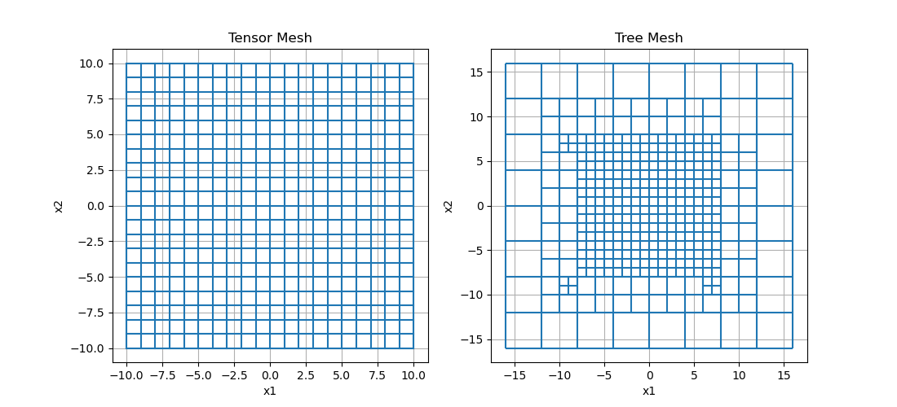
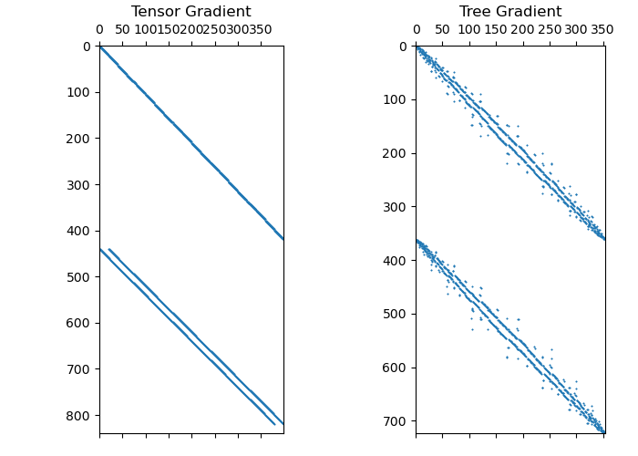

Note
Click here to download the full example code
Gradient Operator¶
For geophysical problems, the relationship between two physical quantities may include the gradient:
For discretized quantities living on 1D, 2D or 3D meshes, sparse matricies can be used to approximate the gradient operator. For each mesh type, the gradient operator is a property that is only constructed when called.
This tutorial focusses on:
how to construct the gradient operator
applying the gradient operator to a discrete quantity
mapping and dimensions or the gradient operator
Background Theory¶
Let us define a continuous scalar function \(\phi\) and a continuous vector function \(\vec{u}\) such that:
And let \(\boldsymbol{\phi}\) and \(\boldsymbol{u}\) be the discrete representations of \(\phi\) and \(\vec{u}\) that live on the mesh. Provided we know the discrete values \(\boldsymbol{\phi}\), our goal is to use discrete differentiation to approximate the vector components of \(\boldsymbol{u}\). We begin by considering a single cell (2D or 3D). We let the indices \(i\), \(j\) and \(k\) denote positions along the x, y and z axes, respectively.

Discretization for approximating the gradient on the edges of a single 2D cell (left) and 3D cell (right).¶
As we will see, it makes the most sense for \(\boldsymbol{\phi}\) to live at the cell nodes and for the components of \(\boldsymbol{u}\) to live on corresponding edges. If \(\phi\) lives on the nodes, then:
the partial derivative \(\dfrac{\partial \phi}{\partial x}\hat{x}\) lives on x-edges,
the partial derivative \(\dfrac{\partial \phi}{\partial y}\hat{y}\) lives on y-edges, and
the partial derivative \(\dfrac{\partial \phi}{\partial z}\hat{z}\) lives on z-edges
Thus to approximate the gradient of \(\phi\), we simply need to take discrete derivatives of \(\phi\) with respect to \(x\), \(y\) and \(z\), and organize the resulting vector components on the corresponding edges. Let \(h_x\), \(h_y\) and \(h_z\) represent the dimension of the cell along the x, y and z directions, respectively.
In 2D, the value of \(\phi\) at 4 node locations is used to approximate the vector components of the gradient at 4 edges locations (2 x-edges and 2 y-edges) as follows:
In 3D, the value of \(\phi\) at 8 node locations is used to approximate the vector components of the gradient at 12 edges locations (4 x-edges, 4 y-edges and 4 z-edges). An example of the approximation for each vector component is given below:
Ultimately we are trying to approximate the vector components of the gradient at all edges of a mesh. Adjacent cells share nodes. If \(\phi\) is continuous at the nodes, then \(\boldsymbol{\phi}\) and \(\boldsymbol{u}\) can be related by a sparse matrix-vector product:
where \(\boldsymbol{G}\) is the gradient matrix that maps from nodes to edges, \(\boldsymbol{\phi}\) is a vector containing \(\phi\) at all nodes, and \(\boldsymbol{u}\) stores the components of \(\vec{u}\) on cell edges as a vector of the form:
Import Packages¶
from discretize import TensorMesh, TreeMesh
from discretize.utils import mkvc, refine_tree_xyz
import matplotlib.pyplot as plt
import numpy as np
# sphinx_gallery_thumbnail_number = 2
1D Example¶
For the 1D case, the gradient operator simply approximates the derivative of a function. Here we compute a scalar function on cell nodes and differentiate with respect to x. We then compute the analytic derivative of function to validate the numerical differentiation.
# Create a uniform grid
h = np.ones(20)
mesh = TensorMesh([h], "C")
# Get node and cell center locations
x_nodes = mesh.vectorNx
x_centers = mesh.vectorCCx
# Compute function on nodes and derivative at cell centers
v = np.exp(-(x_nodes ** 2) / 4 ** 2)
dvdx = -(2 * x_centers / 4 ** 2) * np.exp(-(x_centers ** 2) / 4 ** 2)
# Derivative in x (gradient in 1D) from nodes to cell centers
G = mesh.nodalGrad
dvdx_approx = G * v
# Compare
fig = plt.figure(figsize=(12, 4))
ax1 = fig.add_axes([0.1, 0.02, 0.25, 0.8])
ax1.spy(G, markersize=5)
ax1.set_title("Spy plot of gradient", pad=10)
ax2 = fig.add_axes([0.4, 0.06, 0.55, 0.85])
ax2.plot(x_nodes, v, "b-", x_centers, dvdx, "r-", x_centers, dvdx_approx, "ko")
ax2.set_title("Comparison plot")
ax2.legend(("function", "analytic derivative", "numeric derivative"))
fig.show()
2D Example¶
Here we apply the gradient to a scalar function that lives on the nodes of a 2D tensor mesh. This produces a a discrete approximation of the gradient that lives on the edges of the mesh.
# Create a uniform grid
h = np.ones(20)
mesh = TensorMesh([h, h], "CC")
# Get the gradient
GRAD = mesh.nodal_gradient # Gradient from nodes to edges
# Evaluate gradient of a scalar function
nodes = mesh.nodes
u = np.exp(-(nodes[:, 0] ** 2 + nodes[:, 1] ** 2) / 4 ** 2)
grad_u = GRAD * u
# Plot Gradient of u
fig = plt.figure(figsize=(11, 5))
ax1 = fig.add_subplot(121)
mesh.plotImage(u, ax=ax1, v_type="N")
ax1.set_title("u on cell nodes")
ax2 = fig.add_subplot(122)
mesh.plotImage(
grad_u, ax=ax2, v_type="E", view="vec", stream_opts={"color": "w", "density": 1.0}
)
ax2.set_title("gradient of u on edges")
fig.show()
Mapping and Dimensions¶
When discretizing and solving differential equations, it is natural for:
Scalar quantities on nodes or at cell centers
Vector quantities on cell edges or on cell faces
As a result, the gradient operator will map from one part of the mesh to another; either nodes to edges or cell centers to faces.
Here we construct the gradient operator for a tensor mesh and for a tree mesh. By plotting the operators on a spy plot, we gain an understanding of the dimensions of the gradient operator and its structure.
# Create a basic tensor mesh
h = np.ones(20)
tensor_mesh = TensorMesh([h, h], "CC")
# Create a basic tree mesh
h = np.ones(32)
tree_mesh = TreeMesh([h, h], origin="CC")
xp, yp = np.meshgrid([-8., 8.], [-8., 8.])
xy = np.c_[mkvc(xp), mkvc(yp)]
tree_mesh = refine_tree_xyz(tree_mesh, xy, octree_levels=[1, 1], method="box", finalize=False)
tree_mesh.finalize()
# Plot meshes
fig, ax = plt.subplots(1, 2, figsize=(11, 5))
tensor_mesh.plot_grid(ax=ax[0])
ax[0].set_title("Tensor Mesh")
tree_mesh.plot_grid(ax=ax[1])
ax[1].set_title("Tree Mesh")
# Construct gradient operators
tensor_gradient = tensor_mesh.cell_gradient # 2D gradient from centers to faces
tree_gradient = tree_mesh.nodal_gradient # 2D gradient from nodes to edges
# Plot gradient operators
fig = plt.figure(figsize=(7, 5))
ax1 = fig.add_axes([0.15, 0.05, 0.30, 0.85])
ax1.spy(tensor_gradient, markersize=0.5)
ax1.set_title("Tensor Gradient")
ax2 = fig.add_axes([0.65, 0.05, 0.30, 0.85])
ax2.spy(tree_gradient, markersize=0.5)
ax2.set_title("Tree Gradient")
fig.show()
# Print some properties
print("\n Centers to Faces on Tensor Mesh:")
print("- Number of nodes:", str(tensor_mesh.nN))
print("- Number of edges:", str(tensor_mesh.nE))
print("- Dimensions of operator:", str(tensor_mesh.nE), "x", str(tensor_mesh.nN))
print("- Number of non-zero elements:", str(tensor_gradient.nnz), "\n")
print("\n Nodes to Edges on Tree Mesh:")
print("- Number of nodes:", str(tree_mesh.nN))
print("- Number of edges:", str(tree_mesh.nE))
print("- Dimensions of operator:", str(tree_mesh.nE), "x", str(tree_mesh.nN))
print("- Number of non-zero elements:", str(tree_gradient.nnz), "\n")
- 
- 
Out:
Centers to Faces on Tensor Mesh:
- Number of nodes: 441
- Number of edges: 840
- Dimensions of operator: 840 x 441
- Number of non-zero elements: 1520
Nodes to Edges on Tree Mesh:
- Number of nodes: 355
- Number of edges: 724
- Dimensions of operator: 724 x 355
- Number of non-zero elements: 1512
Total running time of the script: ( 0 minutes 1.003 seconds)